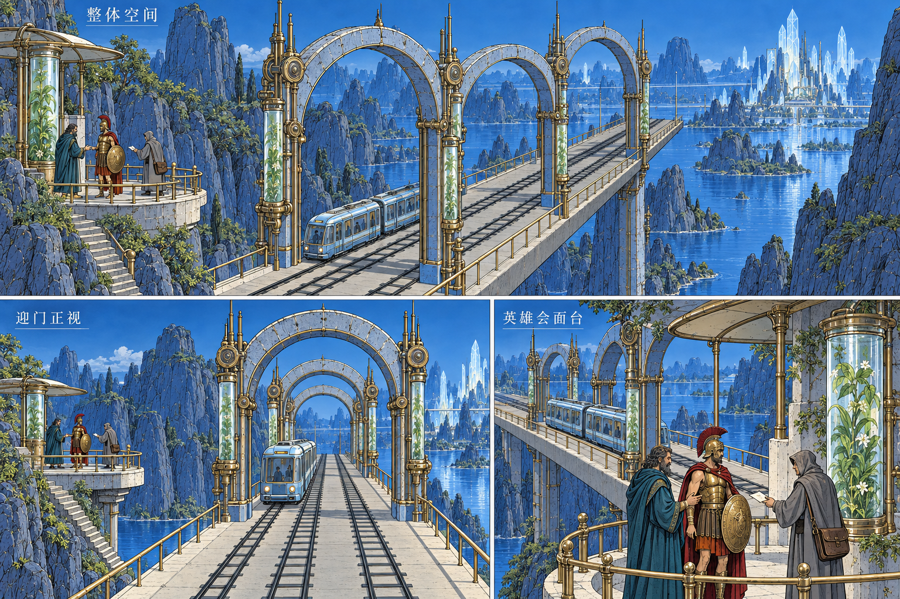
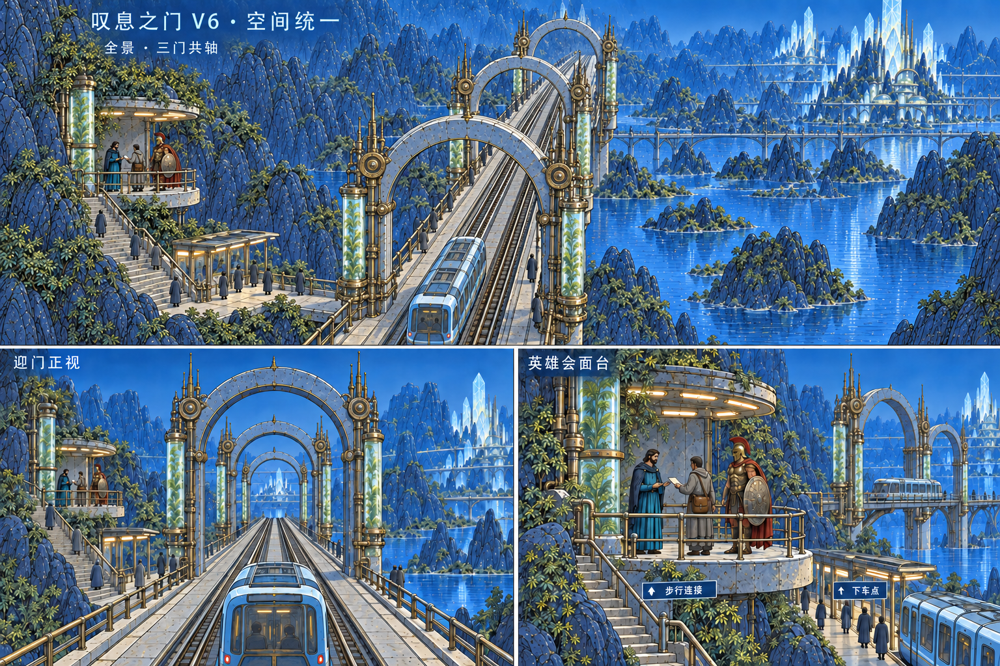
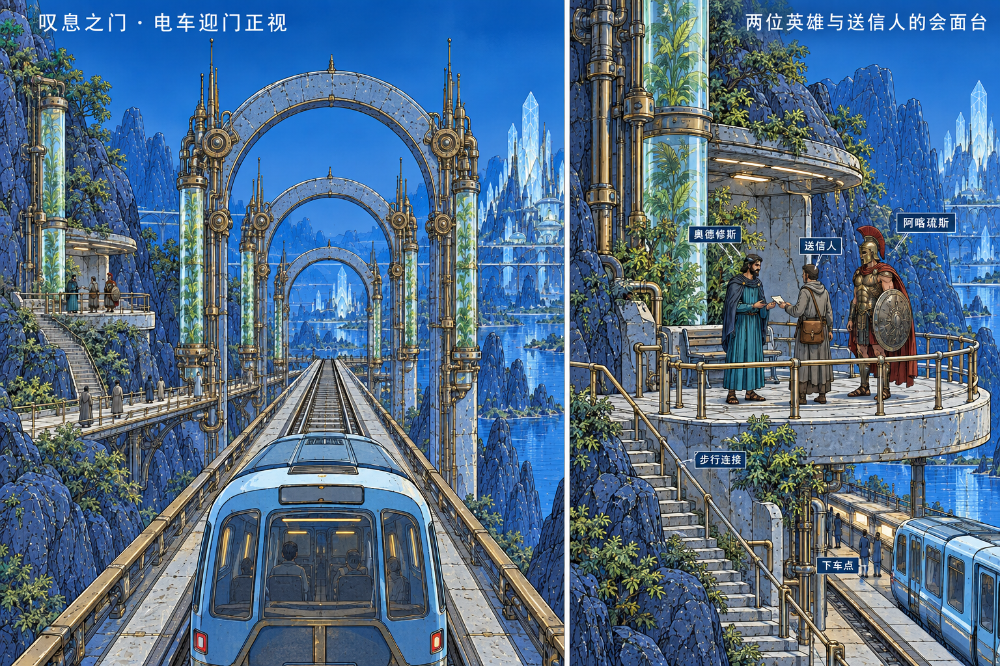
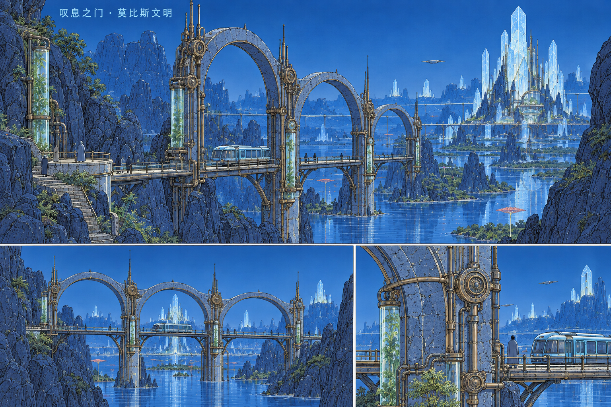

叹息之门 · 莫比斯文明
V8已接入实景：首轮双侧三孔拱廊，仍需优化 最新目标 V8：补建左右纵向拱廊，与正面门洞组成完整建筑（概念候选，未回接模型）
最新目标 V8：补建左右纵向拱廊，与正面门洞组成完整建筑（概念候选，未回接模型）
最新：同一Blender模型的三视图与彩色斜视校验
V7 已被用户否定几何关系，仅保留历史记录
V6 已被用户否定透视，仅作历史记录：三门沿轨道纵深排列，迎门正视与会面平台统一（概念图）
V5补充目标：电车迎门正视与英雄会面平台（概念图，尚未全部建模）
叹息之门鸟旋涡与小鸟群已迁至高山之门。下方最新实景已更新；早期对比图保留当时鸟群。
最新：连续山体细分、下切裂隙与细岩缝已进入游戏。铁路及山体共2880条净空检查通过；原步行解算通过。主体轮廓仍偏坡地，与目标峭壁差距尚大。
本次山体修改前 本次山体修改后 · 实景
本次山体修改后 · 实景 当前岩缝近景
当前岩缝近景
本批保留三次实际模型改动：机械节点与石缝、生态舱植物与管线、蓝石及黄铜受光材质。默认游戏已生效。新岩壁试版不合格，已撤回；仍未达到目标图。
进入真实游戏 · 检查记录及限制
已批准目标
本批之前 · 实景 本批之后 · 同机位实景（鸟群动画时刻不同）
本批之后 · 同机位实景（鸟群动画时刻不同） 当前生态舱与机械节点近景
当前生态舱与机械节点近景